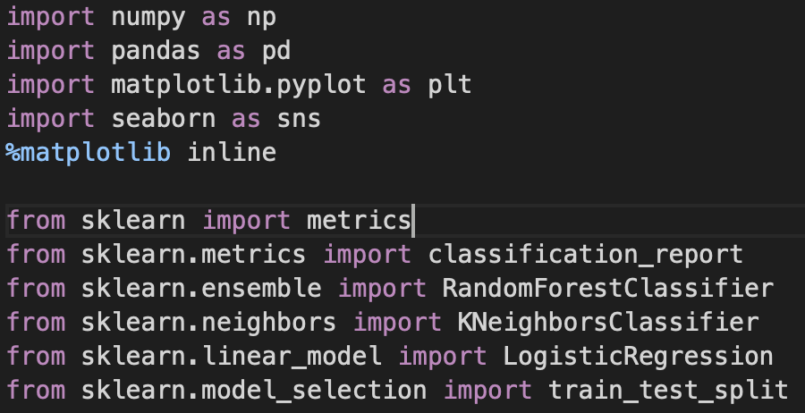

Heart Disease Prediction Using Several Models
In the field of medical science, heart disease continues to be a leading global health concern. This project embarks on a
comprehensive journey to analyze, compare, and evaluate various machine learning models for predicting the presence of heart
disease.
-
Introduction and Scope: Recognizing the significance of early prediction in managing and possibly preventing heart
disease, the project aims to assess the effectiveness of different models using a publicly available dataset. It
showcases not only a scientific approach to heart disease prediction but also an exploration of machine learning
techniques.
-
Data Exploration and Visualization: The initial stage involves loading the dataset, followed by an in-depth
exploratory analysis. Utilizing bar charts, pie charts, and distribution plots, the project visualizes the intricate
relationships between variables such as age, gender, cholesterol levels, chest pain types, and the target variable of
heart disease presence. The rich visualization aids in understanding the underlying patterns and correlations.


-
Data Preparation and Preprocessing: Before modeling, the data is meticulously checked for missing values and
partitioned into training and testing sets, ensuring a robust foundation for the predictive models.
-
Modeling Techniques Employed:
-
Logistic Regression: A fundamental regression analysis method that predicts binary outcomes, offering
simplicity and interpretability.
-
K-Neighbors: A non-parametric classification method, determining classifications based on the majority state
of the nearest neighbors, allowing for flexibility in capturing complex patterns.
-
Random Forest: An ensemble learning method that fuses multiple decision trees, enhancing accuracy through
collective wisdom.
-
Model Evaluation: The evaluation process leverages the f1 score, providing a nuanced understanding of the models'
precision and recall capabilities. This metric allows for a balanced comparison, considering both false positives
and false negatives.
-
Results and Success: Among the three models, the Random Forest Classifier stands out, demonstrating remarkable
performance with an f1 score consistently above 97% on the test dataset. This success underscores the power of
ensemble learning and offers valuable insights for further research and application.
-
Prerequisites and Execution: The project relies on libraries such as NumPy, pandas, Matplotlib, seaborn, and
scikit-learn. It can be easily executed in environments like Google Colab, requiring only the dataset (heart.csv)
in the working directory.

-
Conclusion and Impact: Beyond the technical achievement, this project serves as a beacon for healthcare analytics.
It not only offers a precise and reliable tool for heart disease prediction but also presents a comparative study
on modeling techniques. The insights gleaned from this work contribute to the broader dialogue on health informatics,
machine learning, and preventive healthcare.
Back to all projects